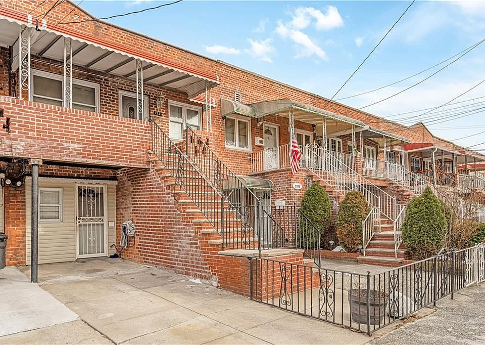

Frame the question.
Start with the decision, the customer, and the constraints. Define what a useful answer needs to change.
IGOR IASEVYCH · BOSTON, MA
Strategy & operations. Finance. Applied analytics.
I connect the numbers to the bigger picture — bringing a decade of business experience to the questions that data can answer.
THE PORTFOLIO

BROOKLYN, NEW YORKA real estate market study connecting neighborhood segmentation, pricing models, and forecasting to a brokerage investment decision.
HOW I THINK
Start with the decision, the customer, and the constraints. Define what a useful answer needs to change.
Clean the data, test the assumptions, and choose methods that fit the question. Keep uncertainty visible.
Translate the analysis into a recommendation, with clear trade-offs and a plan for what to do next.
LET'S CONNECT
Interested in strategy, analytics, or building something useful?